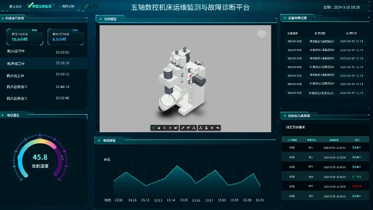
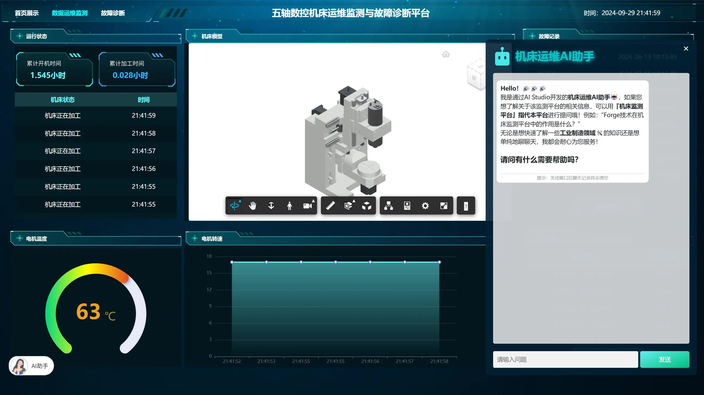
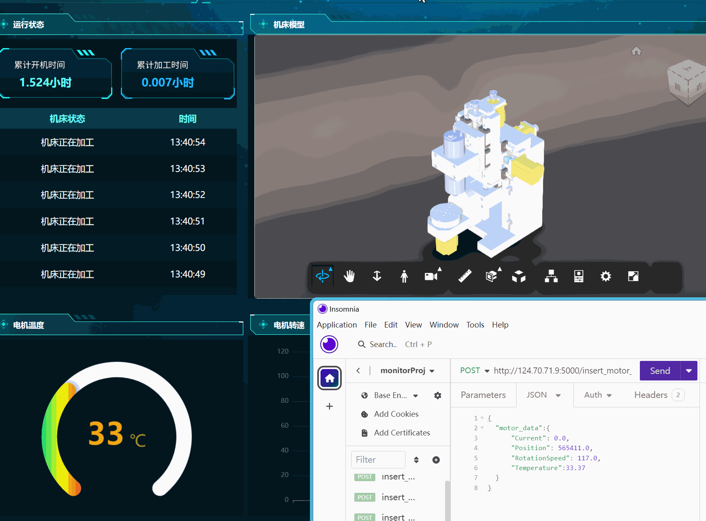

校内实验室项目（参与）：机床故障监测与数字孪生系统。负责传感器采集与数据交互、Flask 后端搭建， 打通「机床传感器 → MQTT → 华为云 IoTDA → 后端 → React 数字孪生前端」全链路。
项目初期调研机床故障监测技术，发现可通过主轴功率波动监测撞刀故障并及时切断电源保护机床。 采集大量主轴功率数据与撞刀故障数据，清洗后先用 ANFIS 训练故障检测模型，后加入 LSTM 引入时间维度， 提高预测准确率。


